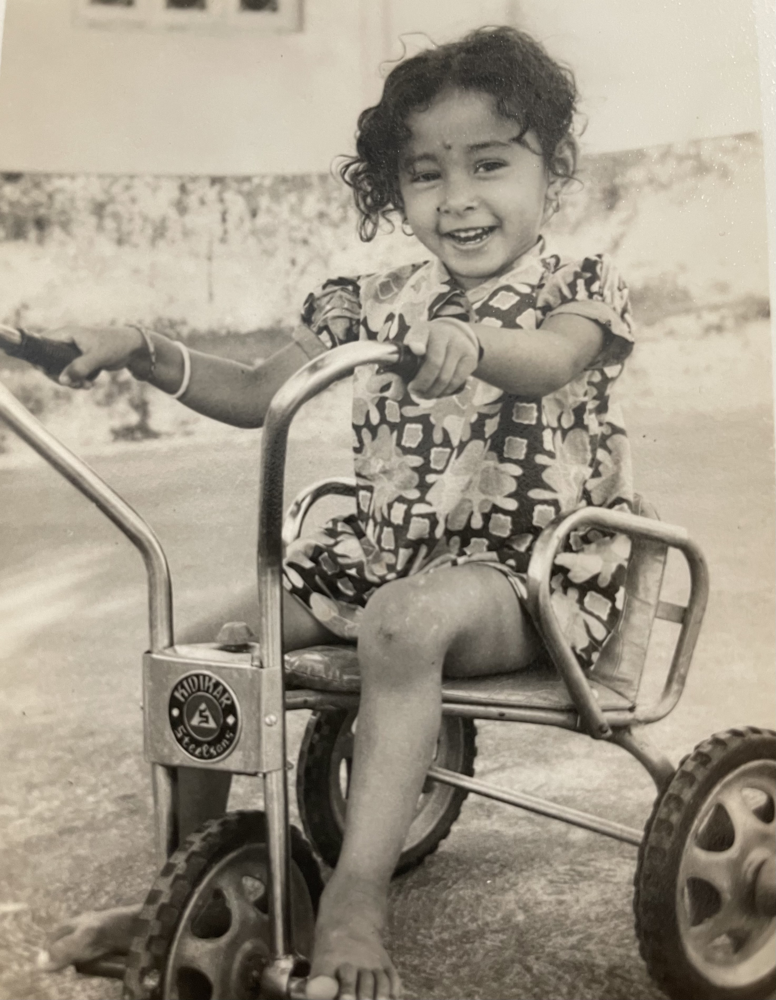
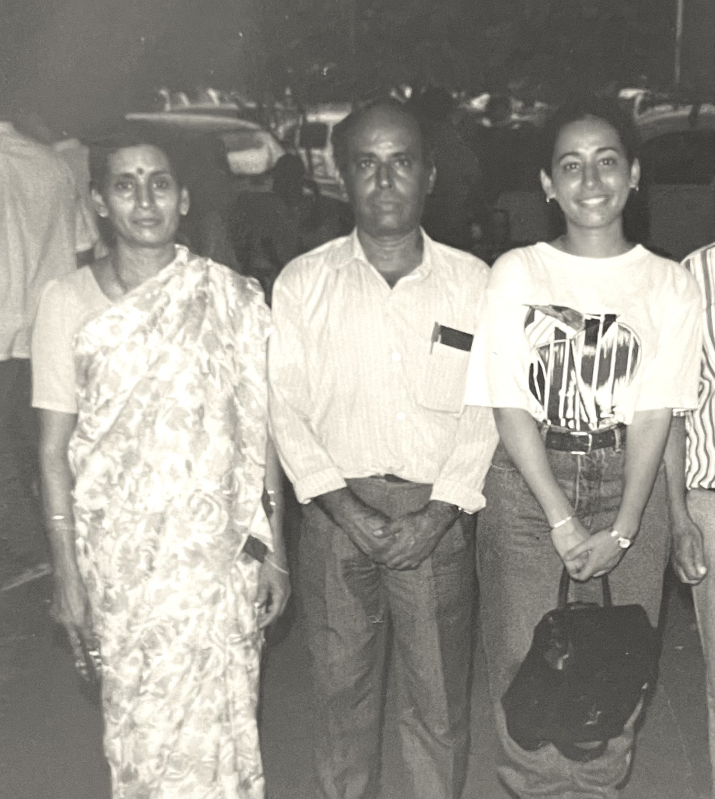

together, they had four amazing children who they loved very much. two girls, then two boys. on september 10, 1973, their second eldest daughter was born.
soon enough, she grew up, and they had to send her off to college all the way from india to america. it was hard, but they always put the needs of their children first.